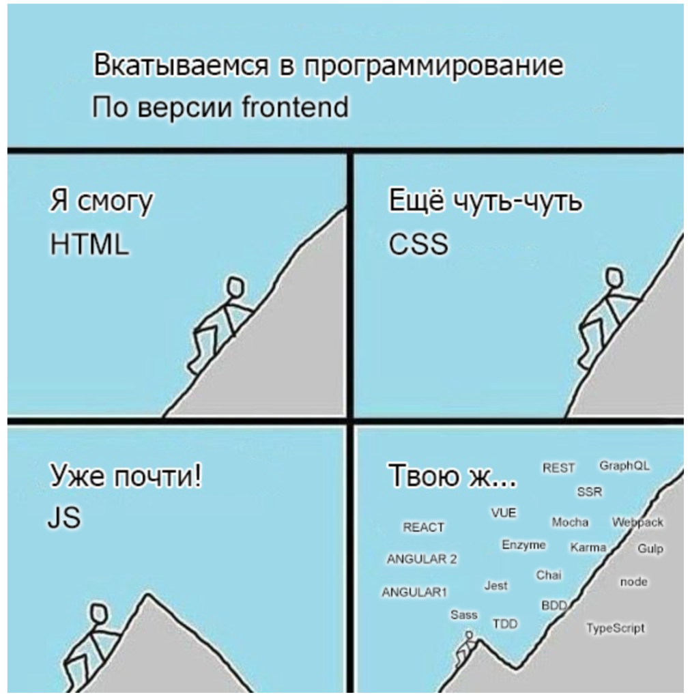

Нехорошее решение - использовать для логотипа картинку из интернета :)
Нехорошее решение - использовать для логотипа картинку из интернета :)
Кто такой frontend-разработчик?
Ссылка на источникКто такой frontend-разработчик?
Frontend-разработчик (frontend developer) — это специалист, который отвечает за создание пользовательского интерфейса сайта, приложения или ПО.
Если backend — это то, что находится на веб-сервере, «под капотом», то фронтендом сайта называют все, что пользователь видит в браузере и с чем взаимодействует, когда вводит данные и получает обратную связь.
Разработку сайта можно сравнить с созданием новой модели автомобиля. В этой аналогии инженеры, работающие над характеристиками шасси, двигателя и трансмиссии, — это backend-разработчики. А дизайнеры и инженеры, отвечающие за панель приборов, эргономику салона и удобство управления автомобилем, — это фронтендеры. Поэтому frontend-разработчику нужны как дизайнерские, так и инженерные навыки.
Где работает и какие задачи решает frontend-разработчик?
Он работает везде, где требуется создание сайта, приложения или любой другой программы, у которой есть интерфейс. Знание JavaScript (основного языка frontend-разработчика) не ограничивает программиста веб-разработкой. Язык используется и для создания десктопных приложений, например офисных пакетов Microsoft и OpenOffice или приложений Adobe, и в программировании оборудования и бытовой техники (платежных терминалов, телевизионных приставок и т.д.).
Помимо студий веб-разработки, для frontend-разработчика есть масса вариантов трудоустройства:
- IT-департаменты компаний. Ритейлеры и маркетплейсы, сотовые операторы и банки, соцсети и стриминговые платформы совершенствуют свои сервисы. Крупнейшие из них сами задают тренды во frontend-разработке. Например фреймворк React создан программистом из Facebook. Работать можно как внутри компании, так и в агентстве, которое специализируется на аутсорс-разработке.
- Разработчики корпоративного софта. Тут нужно будет создавать сервисы управления проектами, CRM и другие веб-приложения для бизнеса. Такое ПО часто имеет сложные интерфейсы и нуждается в регулярной поддержке.
- Государственные организации. Такие сервисы, как «Госуслуги», «Налог.ру», городские информационные порталы постоянно растут и совершенствуются, вовлекая в свою работу в том числе этих специалистов.
Как стать frontend-разработчиком?
Чему учиться?
Программисты со стажем немного лукавят, когда говорят о низком пороге входа в профессию frontend-разработчика. Под этим обычно подразумевается легкость изучения базовых технологий, связанных с версткой (HTML и CSS), и начальных навыков оживления веб-страниц с помощью плагинов и библиотек. Но в 2021 году это лишь малая часть того, что должен знать и уметь фронтендер.
Вот примерный список требований к джуниор-специалисту в 2021 году:
- Знать HTML и CSS. Под этим подразумеваются навыки кроссбраузерной и адаптивной верстки, знание популярных CSS-фреймворков, препроцессоров и HTML-шаблонизаторов.
- Знать JavaScript, в частности стандарт Ecmascript 6 — спецификацию 2015 года, принесшую языку новые элементы синтаксиса и новый уровень производительности.
- Иметь базовые навыки работы в консоли и пользования пакетным менеджером NPM, позволяющим быстро и удобно загружать JavaScript-библиотеки и приложения.
- Уметь пользоваться системой контроля версий, например Git. Навыки работы с Git лучше всего развиваются в процессе командной работы, поэтому от новичка никто не ждет совершенства в работе с платформой. Достаточно понимать, о чем вообще речь, и знать несколько базовых команд.
- Уметь работать со сборщиком проектов (это небольшой код, определяющий последовательность действий при автоматическом запуске приложения из командной строки). Тут важно понимание самой идеи инструмента и базовые навыки пользования. Сборщиков несколько, но самый популярный из них — gulp.js.
- Базово знать один из современных фреймворков: React, Angular или Vue.js. С их помощью разработчик может минимизировать количество обращений к DOM (Document Object Model — объектная модель документа) и организовать мгновенный обмен данными с сервером через API. Вместо того чтобы по каждому клику перезагружать страницу целиком, фреймворк управляет состоянием ее отдельных компонентов, обеспечивая пользователю мгновенный отклик приложения. Подразумевается, что если человек сумел освоить один из них, то сможет достаточно быстро разобраться с другим, если возникнет необходимость. Есть довольно много вакансий, где требуется какой-то конкретный фреймворк.
- Знать английский. Не факт, что от соискателя сразу потребуется обсуждать что-то со штаб-квартирой Facebook, но реакции «Тут нет документации на русском, поэтому я не смогу разобраться» тоже уже не принимаются.